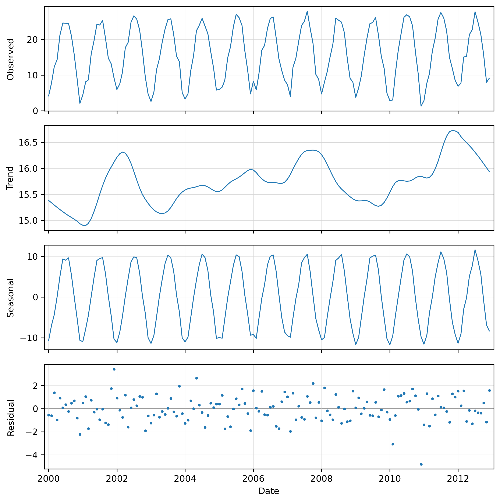
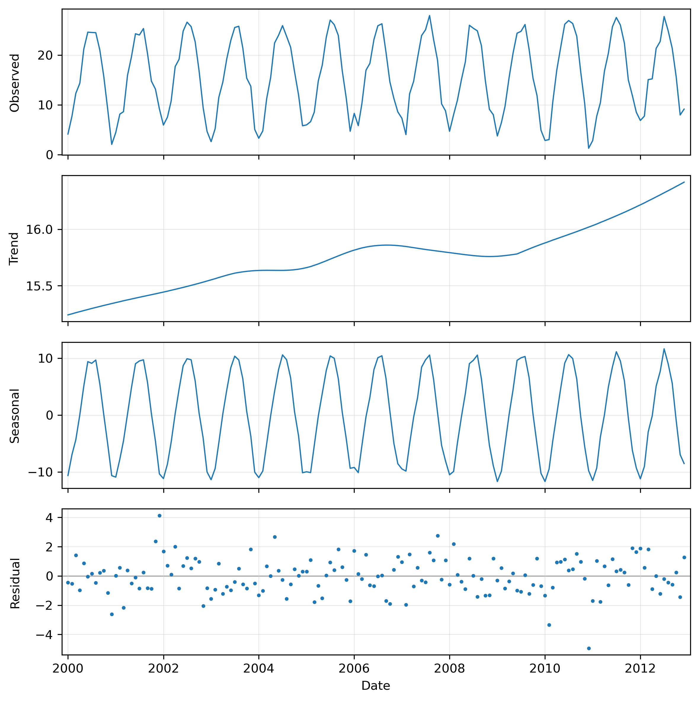
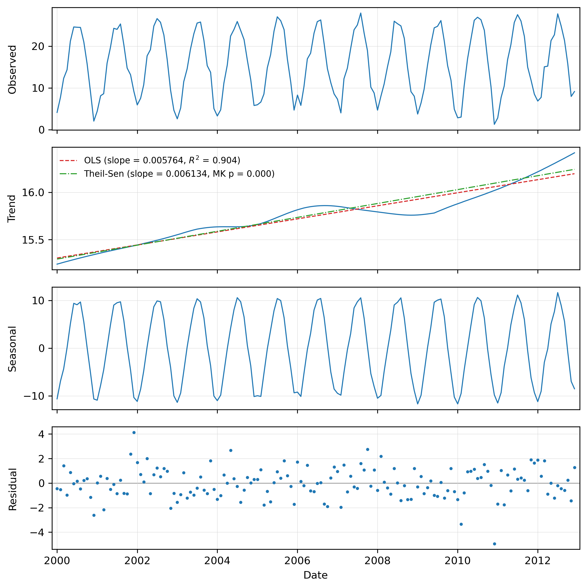

The module is a standalone tool that works on any strds, with either absolute (calendar-dated) or relative (integer-stepped) time. Internally it uses t.rast.what to sample the pixel value at every registered timestep, regularizes the resulting irregular series onto an evenly spaced time axis (a hard requirement of STL), and then runs statsmodels.tsa.seasonal.STL.
Environmental time series derived from remote sensing, like a vegetation index, land surface temperature, snow cover, or soil moisture, are normally composed of:
STL is a procedure that separates these three temporal patterns. It models the observed value at each date as:
observed = trend + seasonal + residual
It estimates the trend and seasonal patterns by repeatedly fitting LOESS (LOcally Estimated Scatterplot Smoothing) curves. These are flexible local regressions that follow the data without assuming a fixed global functional shape. STL is robust, handles long seasonal cycles, and (in its robust variant) can down-weight outliers such as undetected clouds.
Once decomposed, each component answers a different question. The seasonal panel shows the typical within-year cycle; the trend panel shows where the system is heading once seasonality is removed and the residual panel highlights dates that depart from the expected season-plus-trend behaviour. These include normal day-to-day variation, but could also be used to flag anomalies.
The module can be run with default settings to explore patterns. The minimum input is the strds and point coordinates. If the maps in the strds are not regularly spaced, you will need to provide the required frequency as well. For more information about this parameter and other fine-tune options, see the next section.
The point is given with coordinates=east,north in the coordinate system of the current GRASS project. When the module dialog is launched from within the GRASS GUI, the coordinates field can also be filled by clicking a location in the map display (when launched from the terminal, clicking a location will not work).
The module samples the value at the point in the current computational region's resolution. Set the region with g.region before running if needed. The point must fall inside the current region.
The tool handles both temporal types of strds. For absolute-time datasets the x-axis of the plot is labelled with dates. For relative-time datasets the x-axis is labelled "Time step".
STL requires an evenly spaced, gap-free series. The series is therefore resampled onto a regular axis and any gaps are then filled in. Three options control this:
frequency sets the spacing of the regular axis for absolute-time datasets. It is a pandas offset alias. Common choices are D (daily), W (weekly), MS (month start), or e.g., 16D for a 16-day composite series. For absolute-time datasets that are already regularly spaced, frequency may be omitted and the spacing is inferred. For irregular data you should set it explicitly to fit the desired / intended spacing.
step sets the spacing for relative-time datasets, as an integer in the dataset's own time unit (frequency is ignored for relative-time datasets). If step is omitted, the dataset granularity reported by t.info is used, and the extent of the regular axis is taken from the data. Observations that do not fall on a grid node are snapped to the nearest node (with a warning), and two observations landing on the same node are averaged.
interpolation chooses how gaps left after resampling are filled. The default is a linear interpolation. If gaps are uneven, you might want to use the time option, which takes into account the actual time distance between observations. For the other options, nearest, pchip, akima, cubic, quadratic, spline and polynomial, see the manual page of the Pandas Series.interpolate function, which this module uses for the gap filling.
You will normally want to make sure the frequency (or step) matches the real sampling of your data. If these are not matching, your data will be resampled. For example, setting data that is actually 16-day composites to D (daily) will create many interpolated points and smoothen the data series.
The decomposition wraps statsmodels.tsa.seasonal.STL. Its most important parameter is period, which is tied to the regularized frequency (or, for relative-time data, the step / granularity). It is the number of observations in one full seasonal cycle. For example 12 for monthly data, 23 for a 16-day composite series (≈ 365 / 16), or 365 for daily data with an annual cycle. If period is not given it is estimated from the resampled frequency (or, for relative-time data, the dataset granularity). Set it explicitly whenever you are unsure the inference will be right, or when your cycle is not annual.
The remaining STL options fine-tune the LOESS smoothers. For users familiar with R's stl() function, many of these parameters are similar or identical, although the defaults may differ.
seasonal: length of the seasonal smoother (odd integer ≥ 7). Smaller values let the seasonal shape change quickly from cycle to cycle; larger values force a more stable, near-constant season. The equivalent parameter in R's stl() function is s.window.
trend: length of the trend smoother (odd integer). Larger values give a smoother, stiffer trend that ignores short wiggles; smaller values let the trend bend more. If left empty, statsmodels derives a default from the period and seasonal window. The equivalent parameter in R's stl() function is t.window.
low_pass: length of the low-pass smoother (odd integer ≥ 3). This is an internal step separating season from trend; the default (the smallest odd number larger than period) is almost always fine. The equivalent parameter in R's stl() function is l.window.
seasonal_degree, trend_degree, low_pass_degree: the degree of the local polynomial each LOESS uses (0 = locally constant, 1 = locally linear). statsmodels defaults to 1. R's stl() also uses 1 for the trend (t.degree) and low-pass (l.degree) smoothers, but 0 for the seasonal smoother (s.degree).
seasonal_jump, trend_jump, low_pass_jump: control the trade-off between speed and accuracy. The LOESS is evaluated every jump observations and interpolated in between; 1 (the default) evaluates at every point and is the most exact.
-r (robust flag): turns on robust fitting, which iteratively down-weights outliers. This is worth enabling when residual cloud or sensor spikes are distorting the fit.
Beyond the visual decomposition, the tool quantifies the long-term change by fitting two straight-line regressions to the STL trend component and drawing them on the trend panel. The first is an ordinary least-squares (OLS) line, reported with its slope and R². The second is a robust Theil-Sen line (SciPy's theilslopes), reported with its slope and a monotonic-trend p-value from Kendall's rank-correlation test (SciPy's kendalltau). Note that this differs from a full Mann-Kendall test, which applies tie and variance corrections. The reported p-values may therefore differ slightly when the data contain ties.
In both cases, the slope is expressed per observation of the regularized series, i.e., per step of the chosen frequency (absolute series) or step (relative series). For a daily (D) series this is per day; for a 16-day composite (16D) it is per 16-day step, for a monthly (MS) series per month, and so on.
Which line(s) appear on the trend panel is controlled by two flags: -o draws the OLS line, and -s draws the Theil-Sen line. Note that the Theil-Sen slope with the non-parametric Kendall test is more resistant to outliers and does not assume normal residuals. It is therefore often the safer choice for ecological series.
The trend LOESS has to extrapolate at both ends of the series because, near the boundaries, it can only use data from one side. As a result, the first and last trend estimates are less reliable and disproportionately influence the fitted regression line. The trend_trim option reduces this edge effect by excluding a portion of the trend before fitting the regression. The trimming amount is specified as a fraction of the effective trend window:
If you see the regression line being pulled by an upswing or downswing right at the edge of the plot, increasing trend_trim is the appropriate fix.
By default the multi-panel plot is shown in an interactive window. If output is given, the plot is instead saved to that file and the image format is taken from the file extension (.png, .pdf, .svg, ...). Plot appearance is controlled by dpi (resolution, default 300) and plot_dimensions (width,height in inches, default 8,8).
The backend option selects the matplotlib rendering backend. You rarely need it: Agg is chosen automatically when writing to a file, and WXAgg (an interactive window) when no output file is given. Override it only if your system needs a different interactive backend (e.g. TkAgg, Qt5Agg).
The csv option additionally writes the observed, trend, seasonal and residual components per date, so they can be replotted or analysed in your software tool of choice.
The vector option creates a point vector layer at the selected location, carrying the trend regression results (slope, R², p-value) as attributes.
The where option accepts a temporal WHERE clause (as used by other t.* modules) to restrict the analysis to a subset of timestamps, for example a particular range of years.
The nprocs option sets the number of parallel processes used during sampling by t.rast.what, potentially making the module substantially faster to run.
This addon requires the Python packages numpy, pandas, scipy, matplotlib and statsmodels. They are all pip-installable, e.g.
pip install numpy pandas scipy matplotlib statsmodels
If a dependency is missing the module exits with a message indicating which package to install.
The examples use the North Carolina mapset with climatic data time series (nc_climate_spm_2000_2012), which you can download from the GRASS sample data page.
The following is borrowed from the NSCU-Geoforall tutorial. We create temporal datasets which serve as containers for the time series. First step is to create empty datasets of type strds (space-time raster dataset). Note, that we use absolute time.
t.create output=tempmean type=strds temporaltype=absolute title="Average temperature" description="Monthly temperature average in NC [deg C]"
Now we register raster maps into the space-time raster datasets we just created. We use g.list to list separately temperature and precipitation maps. Note that g.list lists maps alphabetically which in this case orders the maps chronologically which is what we need. Using backticks to pass the maps directly to t.register.
t.register -i input=tempmean type=raster start=2000-01-01 increment="1 months" maps=`g.list type=raster pattern="*tempmean" separator=comma --quiet`
Decompose the monthly temperature series at a point and save the outcome as PNG:
g.region raster=2000_01_tempmean -p t.rast.stl strds=tempmean coordinates=636000,221000 frequency=MS period=12 output=t_rast_stl_01.png
Resulting image:

The trend line shows inter-annual variation, with the years 2002, 2007 and 2012 being warmer than the surrounding years. To emphasize the longer term trend rather than the inter-annual swings, set trend= to something larger. For example, set the trend to 85.
t.rast.stl strds=tempmean coordinates=636000,221000 trend=85 frequency=MS period=12 output=t_rast_stl_02.png
Resulting image:

The previous result suggests a steady increase in temperatures between 2000 and 2012. To further explore this, the OLS and Theil-Sen trend lines and their statistics can be included.
t.rast.stl -os strds=tempmean coordinates=636000,221000 trend=85 frequency=MS period=12 output=t_rast_stl_03.png
Resulting image:
